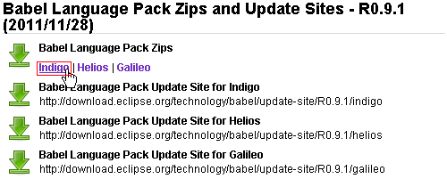
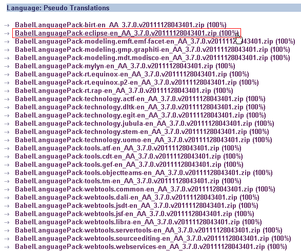
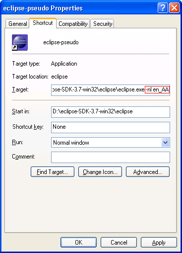
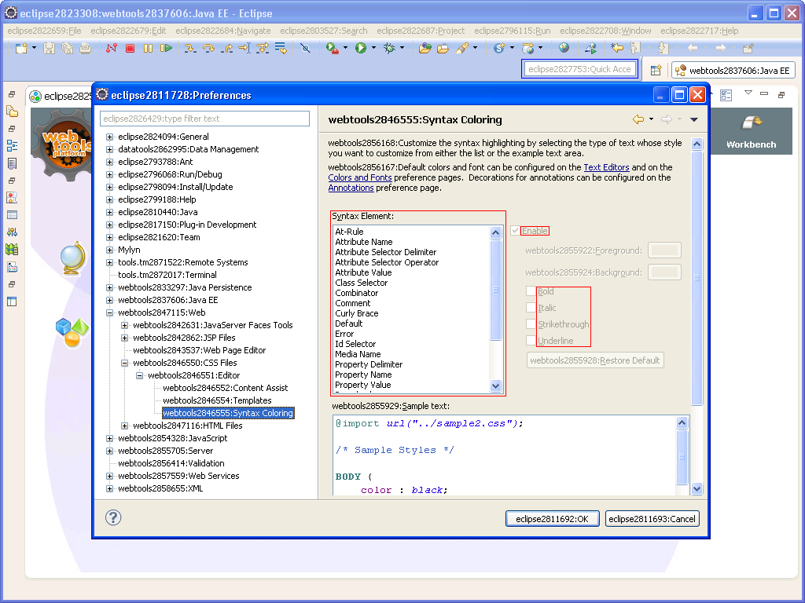
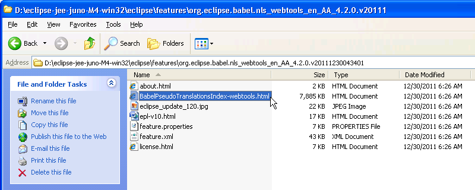
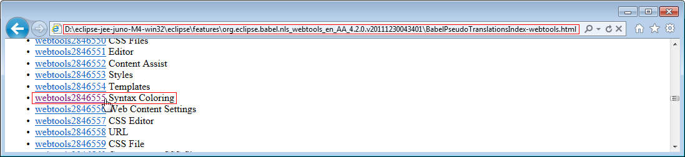
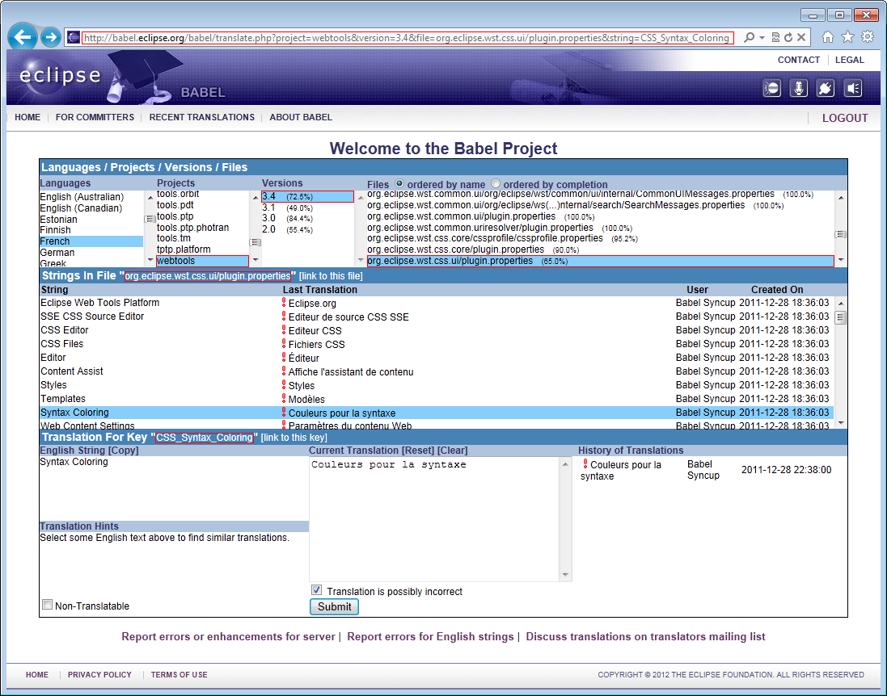

Introduction
Eclipse is a global community. It is in everyone's interest to ensure that Eclipse is globalized and translated into as many languages as possible. Babel is the globalization project for Eclipse. The goal of the Babel project is to provide a set of tools to make the job of globalizing Eclipse projects easier. Babel also provides ways for people worldwide, who are interested, to contribute translations in their language of choice.
Babel Translation Server
The Babel Translation Server (http://babel.eclipse.org/babel/) is a wiki-like server where any Eclipse user with an Eclipse Bugzilla ID may login and help translate Eclipse.
Babel Language Packs and Update Sites
Babel produces nightly and weekly language packs from the translations entered into the Babel Translation Server. Information for the latest Babel Language Packs and Update Sites is available at: http://www.eclipse.org/babel/downloads.php
Babel Pseudo Translation Language Packs
Among the language packs built are the Babel Pseudo Translation Language Packs . Using these pseudo translation language packs, you can:
- identify hard-coded strings
- identify layout and truncation problems
- identify the Eclipse project and file where strings come from
Installing the Babel Pseudo Translation Language Packs
The following is an example on how to install the Babel Pseudo Translation Language Pack for the Eclipse 3.7 project on Windows. Similar process can be used to install the Babel Pseudo Translation Language Packs for other Eclipse projects on different platforms.
- Assume that you have Eclipse 3.7 installed at: D:\eclipse-SDK-3.7-win32
- Go to the Babel Language Packs and Update Sites download page at: http://www.eclipse.org/babel/downloads.php
- Click on the Babel Language Pack Zips for Indigo link (see figure 1)

Figure 1 - Babel Language Packs and Update Sites Download Page
- Scroll down to the Pseudo Translations section
- Click on the Babel Pseudo Translation Language Pack for Eclipse link (see figure 2)

Figure 2 - Babel Pseudo Translation Language Packs
- Download and unzip the pseudo translation language pack to: D:\eclipse-SDK-3.7-win32
Launching Eclipse in Babel Pseudo Translations
- Create a shortcut for the Eclipse executable file: D:\eclipse-SDK-3.7-win32\eclipse\eclipse.exe
- Rename the shortcut to eclipse-pseudo for easier identification
- Select Properties from the popup menu for the shortcut
- Append the -nl en_AA command line argument to the end of the Target field (see figure 3)

Figure 3 - Create Shortcut for Launching Eclipse in Babel Pseudo Translations
- Click OK to save the changes
- Double-click the shortcut to launch Eclipse in Babel Pseudo Translations
- Choose your workspace folder on the Workspace Launcher dialog and click OK to continue
- Eclipse will be launched in Babel Pseudo Translations
- Note: If your Eclipse package contains other Eclipse projects, you need to download and install the Babel Pseudo Translation Language Packs for the other Eclipse projects
Testing with Babel Pseudo Translations
- Figure 4 below shows an example of the Eclipse IDE for Java EE Developers package with Babel Pseudo Translation Language Packs for Eclipse , Datatools , Marketplace Client , Mylyn , Target Management (RSE) , and Webtools installed

Figure 4 - Eclipse IDE for Java EE Developers Package with Babel Pseudo Translation Language Packs
- You will notice that there is a special Babel Pseudo Translation Prefix in the form of <project-id><pseudo-translation-index>: in front of every string in Eclipse, for example: eclipse2824094:General
- A string without the Babel Pseudo Translation Prefix , for example, the Enable checkbox label (enclosed in red in figure 4), is “usually” hard-coded in the programs and not externalized for translation
- Further investigations have to be done to determine if the source plugins are properly provided to Babel for string extraction, or if you are missing the Babel Pseudo Translation Language Packs for other Eclipse projects
- The added prefix to every string in Eclipse helps to simulate longer translations from other languages and hence can help identify layout and truncation problems in Eclipse
- For example, the Quick Access label for global search field in the tool bar (enclosed in blue in figure 4) does not take into account of longer translations from other languages and the label is truncated when Eclipse is launched in Babel Pseudo Translations
Identify the Eclipse Project and File Where Strings Come From
- The Babel Pseudo Translation Language Packs can be used to identify the Eclipse project and file where strings come from
- For example, you'd like to indentify the Eclipse project and file where the webtools2846555:Syntax Coloring string comes from
- The first part of the Babel Pseudo Translation Prefix tells you that the string comes from the Webtools project
- Go to the Babel Webtools NLS Feature folder at where your Eclipse package is installed: D:\eclipse-jee-juno-M4-win32\eclipse\features\org.eclipse.babel.nls_webtools_en_AA_4.2.0.v20111230043401 (see figure 5)

Figure 5 - Babel Webtools NLS Feature Folder
- Open the BabelPseudoTranslationsIndex-webtools.html file in a web browser
- Find the link for webtools2846555 (see figure 6)

Figure 6 - BabelPseudoTranslationsIndex-webtools.html
- Inspect the URL: http://babel.eclipse.org/babel/translate.php?project=webtools&version=3.4&file=org.eclipse.wst.css.ui/plugin.properties&string=CSS_Syntax_Coloring
- The URL shows that the string comes from project: webtools , version: 3.4 , file: org.eclipse.wst.css.ui/plugin.properties , string: CSS_Syntax_Coloring
- If you click on the URL, login to the Babel Translation Server with your Eclipse Bugzilla user ID and password, you can help translate the string in your language (see figure 7)!

Figure 7 - Babel Translation Server
Conclusion
Babel Pseudo Translations are a very useful tool for Eclipse developers to test for hard-coded strings, layout and truncation problems, and to identify the Eclipse project and file where strings come from. Eclipse developers can use the Babel Pseudo Translations to verify the translatability of their projects and make sure Eclipse excels in national language support.
Trademarks
Eclipse is a trademark of the Eclipse Foundation, Inc.
IBM is a registered trademark of International Business Machines Corporation in the United States, other countries, or both.
Microsoft and Windows are registered trademarks of Microsoft Corporation in the United States, other countries, or both.
Oracle and Java are registered trademarks of Oracle and / or its affiliates.
Other company, product, or service names may be trademarks or service marks of others.